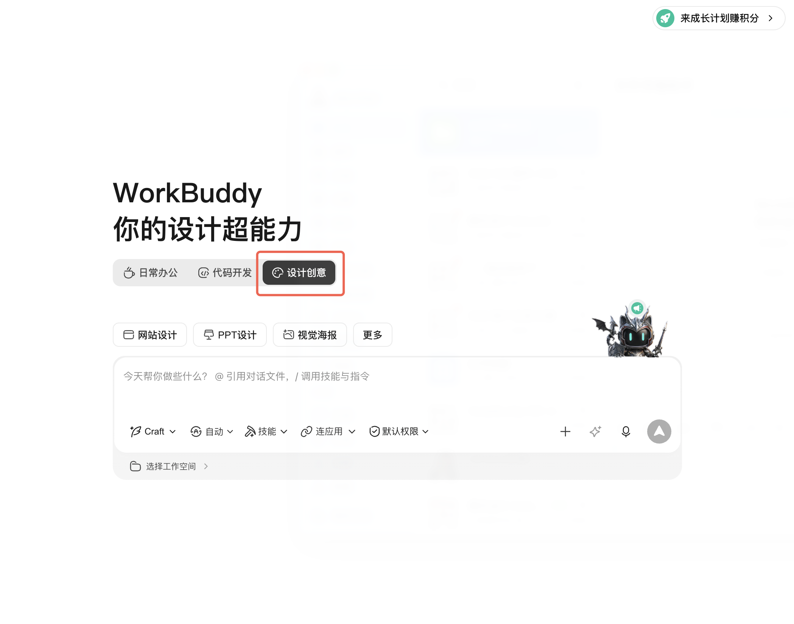
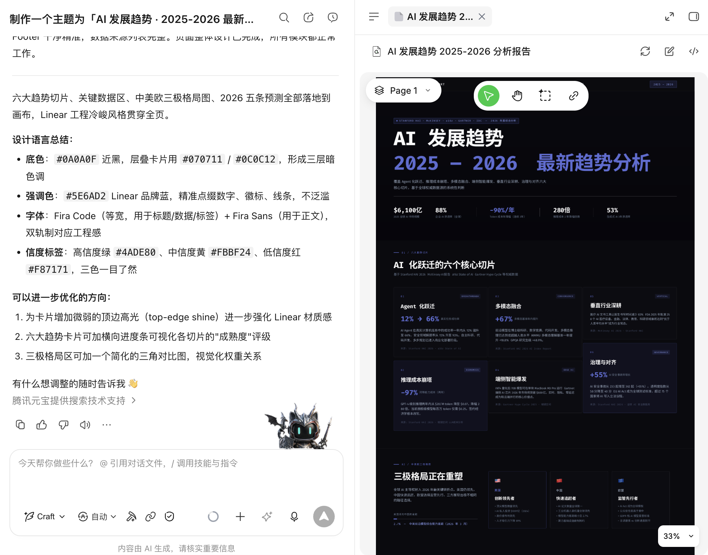
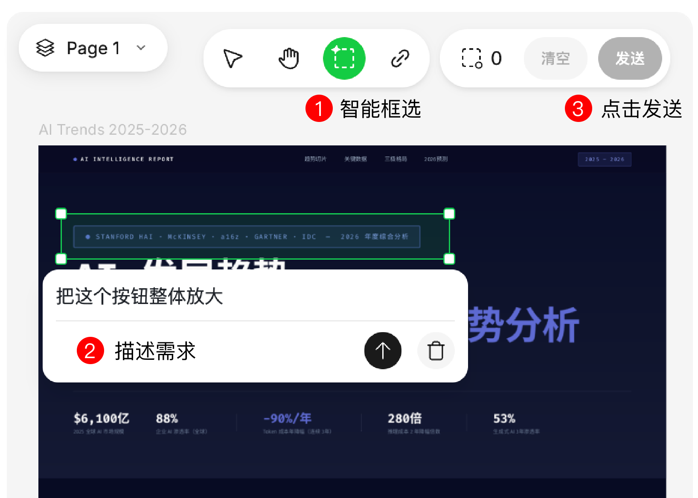
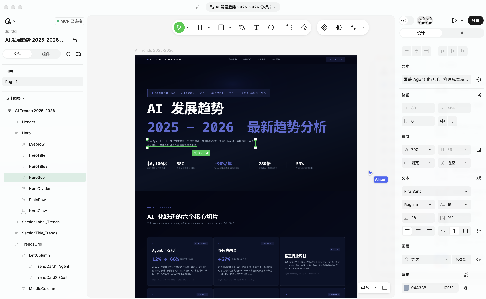
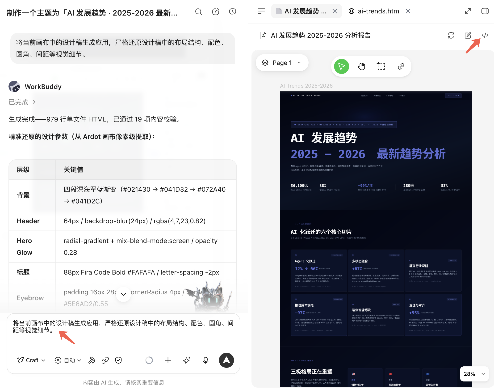

设计创意（WorkBuddy × Ardot）
腾讯设计 Ardot 是腾讯自研的 AI 设计智能体协作平台。WorkBuddy 在「设计创意模式」中深度集成了 Ardot 画布——支持在对话中一句话生成 UI、PPT、海报等设计稿，实时对话修改、云端同步，可随时跳转到 Ardot 进行精细化编辑，满意后一键生成应用代码，实现从创意到落地的丝滑闭环。
本篇教程将带你学习 WorkBuddy × Ardot 的基础操作。
一、连接
- 打开 WorkBuddy 首页，点击「新建任务」，选择最右侧的 设计创意 Tab。

- 首次使用时，系统会弹出授权确认窗口。WorkBuddy 通过登录手机号自动完成与 Ardot 的身份关联，无需单独注册腾讯设计账号，点击确认后即可使用。
权限详情：
- 读取画布内容： 读取设计稿中的元素、样式、布局信息
- 编辑画布： 代表您在 Ardot 画布上执行新增、修改、删除等设计操作
- 云端同步： 与 Ardot 浏览器端保持实时双向同步
连接后，WorkBuddy 获得当前登录用户的 Ardot 画布操作权限，所有设计稿存储在云端，换电脑、重新登录均不会丢失。
二、使用
对话生成设计稿
进入设计创意模式后，在对话框中用自然语言描述你想要的设计，AI 将实时在 Ardot 画布上生成。
示例指令：
- 「帮我设计一个移动端登录页」
- 「帮我设计一张产品发布会的宣传海报，主题是 XX」
- 「帮我制作一份 AI 硬件产品发布会 PPT，风格是XX」

支持的设计类型包括：移动端 App 界面、网站页面/Landing Page、品牌 Logo、海报/Banner、PPT 演示文稿等。
对话驱动修改
生成设计稿后，可以继续通过对话精准调整，三种修改方式任选：
| 方式 | 操作 | 适用场景 |
|---|---|---|
| 智能框选 + 对话 | 在画布中选中想要调整的位置，描述修改，点击发送 | 针对局部位置精准调整 |
| 纯语言指挥 | 直接在对话框中描述修改需求，无需选中 | 全局调整或不确定位置时 |
| 粘贴参考 | 粘贴网页链接或上传参考图片 | 参考其他设计风格 |
示例指令：
- 「把这个按钮整体放大」
- 「首页背景改成渐变蓝色」
- 「参考这个网页链接的视觉风格进行优化」

每轮修改后，Agent 会告知本轮具体改动内容，过程可追溯。
跳转 Ardot 精细化编辑
对话生成帮你从 0 到 80 分，Ardot 编辑器帮你从 80 分到 100 分。
AI 对话擅长快速出稿和批量调整，但设计落地的"最后一公里"往往需要精确的人工把控。Ardot 编辑器正是为此而生——它不是另一个需要学习的工具，而是你在对话出稿之后，让作品真正可交付的关键一步。
为什么要跳转到 Ardot？
| 你的身份 | 对话生成后常遇到的问题 | Ardot 编辑器帮你解决 |
|---|---|---|
| 非专业设计师（产品经理、开发、运营） | AI 出的稿大方向对了，但间距不均匀、字号层级不够清晰、颜色搭配想微调，靠对话一轮轮说不清楚 | 所见即所得的拖拽调整，不用学 Figma/PS，点选就能改颜色、拖动就能调间距，零设计基础也能出专业效果 |
| 专业设计师 | AI 生成的初稿结构不错，但细节达不到交付标准——图层命名混乱、对齐有偏差、缺少状态变体、无法导出规范切图 | 完整的专业编辑能力：精确到像素的对齐、图层管理、组件化编辑、多格式导出（PNG/SVG/PDF），满足设计交付规范 |
Ardot 编辑器的核心优势：
- 所见即所得： 直接拖拽、点选修改，不需要用语言描述"往左移 3 像素"
- 像素级精确： 对齐参考线、间距标注、精确数值输入，交付级精度
- 组件化编辑： 复用组件、批量修改样式，保持设计一致性
- 专业导出： PNG/SVG/PDF 多格式导出，支持切图标注，可直接交付开发
- 实时双向同步： 在 Ardot 里的任何改动实时回流 WorkBuddy，两边始终一致
如何跳转：
- 点击画布 Tab 顶部的「用浏览器打开进行编辑」按钮
- 跳转后进入 Ardot 完整编辑器，体验专业设计工具的编辑能力

双向实时同步：在 Ardot 浏览器端做的任何修改会实时回流 WorkBuddy 画布 Tab，无需手动刷新。回到 WorkBuddy 后 Agent 也能读取浏览器端的最新状态继续对话修改。改完回来继续对话，Agent 能接着你的最新版本往下走。
推荐工作流： 对话快速出稿（3 分钟）→ 跳转 Ardot 精修交付（5 分钟）→ 回到 WorkBuddy 生成代码（1 分钟）
这是效率最高的组合打法：用 AI 跳过从零开始的痛苦，用 Ardot 保证最终品质，用代码生成打通落地。三步走完，一个能用的产品页面就出来了。
从设计稿生成应用代码
设计稿修改满意后，可以一键生成可运行的应用代码。
两种触发方式：
- 在对话中说「将当前画布中的设计稿生成应用」
- 或点击画布 Tab 顶部的「生成应用」按钮

生成后可继续用对话调整代码细节：「用 React 重写」「加一个 dark mode」「改成 Tailwind 样式」等。